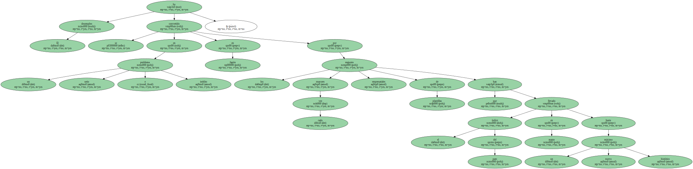
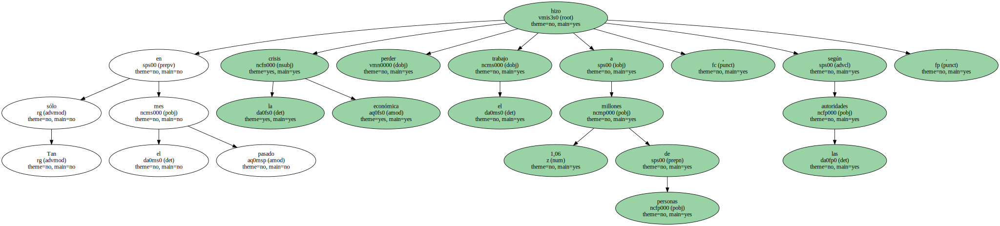
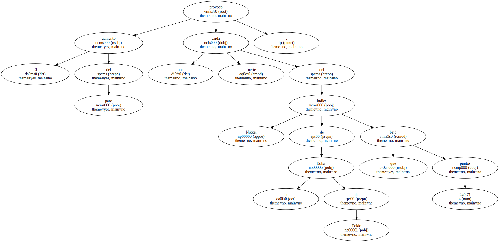
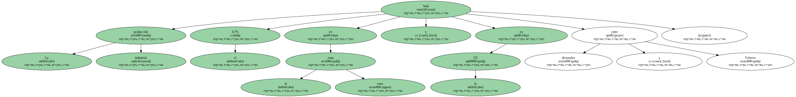
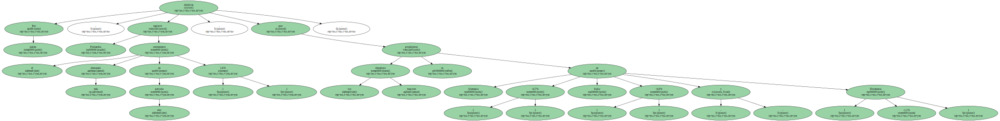
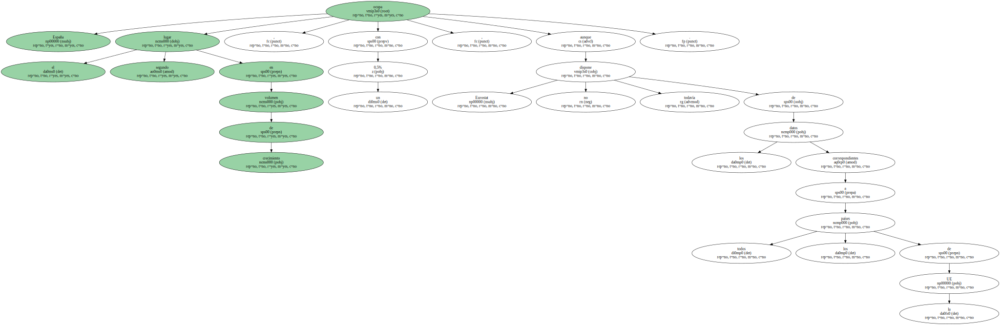
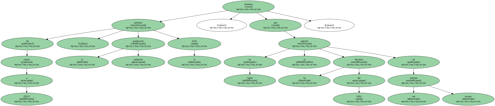

La tasa de paro en Japón alcanza el 4,8% de la población activa.

El desempleo se ha convertido en un serio e inédito problema en Japón por los cada vez mayores reajustes empresariales de plantillas que han llevado el índice del paro en marzo hasta un nuevo máximo histórico.
Tan sólo en el pasado mes la crisis económica hizo perder el trabajo a 1,06 millones de personas , según las autoridades.
El aumento del paro provocó una fuerte caída del índice Nikkei de la Bolsa de Tokio que bajó 240,71 puntos.
La producción industrial bajó el 0,7% en la zona euro y en la UE entre diciembre y Febrero.
Por países , Finlandia registró el crecimiento más destacado en este periodo ( 1,6% ) , mientras que los mayores descensos se produjeron en Alemania ( -0,7% ) , Italia , ( -0,9% ) y Dinamarca ( -1,1% ).
España ocupa el segundo lugar en volumen de crecimiento , con un 0,5% , aunque Eurostat no dispone todavía de los datos correspondientes a todos los países de la UE.
En cuanto a EEUU , la producción industrial aumentó el 0,3% , mientras que en Japón se registró un descenso del 0,8% en ese mismo periodo.
